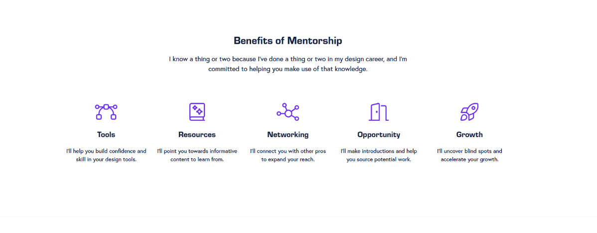
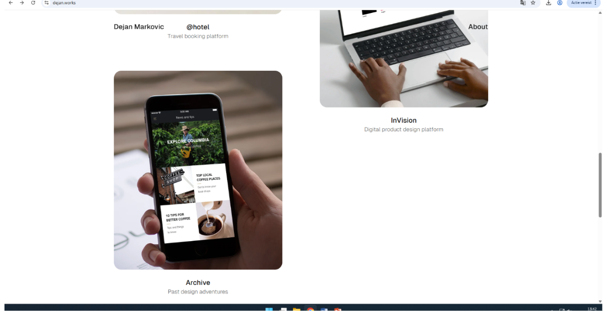
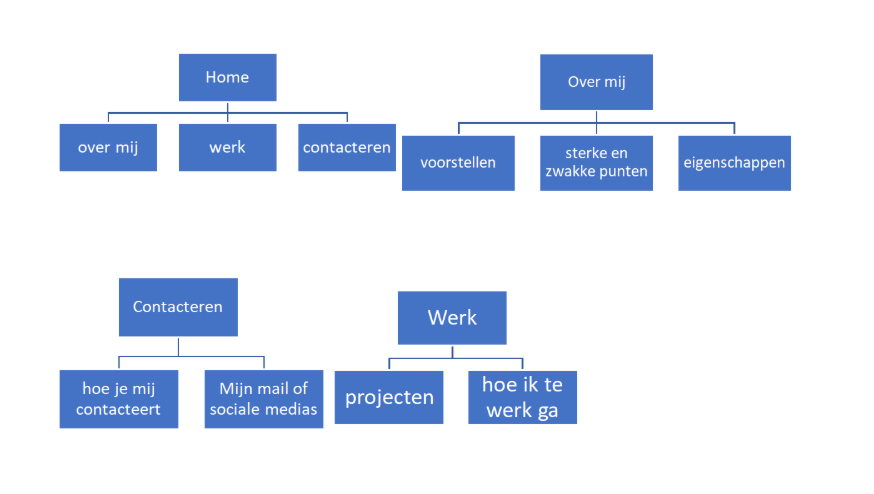

Mijn Portfolio Website
Op deze pagina beschrijf ik het doel, de inspiratie, het kleurenschema en de sitemap van mijn portfolio. Zo is duidelijk hoe de website is bedacht en opgebouwd.
Omschrijving van de Website
Mijn portfolio website is gemaakt om te laten zien wie ik ben, welke vaardigheden ik leer en welke projecten ik heb gebouwd tijdens mijn opleiding Software Development.
De website is bewust overzichtelijk gehouden. Bezoekers kunnen snel navigeren naar mijn persoonlijke informatie, vaardigheden, projecten, CV en contactformulier.
Doel
Mijn werk en groei als developer laten zien.
Gebouwd met
HTML, Bootstrap en eigen content.
Belangrijkste gebruiker
Docenten, klasgenoten en toekomstige stagebedrijven.
Screenshots en Inspiratie
Voor mijn portfolio heb ik gekeken naar rustige developer portfolio's met duidelijke navigatie, projectkaarten en veel witruimte.

Heldere homepagina
Ik wilde meteen laten zien wie ik ben en wat ik doe. Daarom staat bovenaan een korte introductie met knoppen naar projecten en contact.

Projecten als kaarten
Veel portfolio's tonen projecten in kaarten. Dit maakt het makkelijk om per project het doel, de technieken en de link naar GitHub te bekijken.

Rustige layout
Ik heb gekozen voor een simpele layout met donkere navigatie, lichte achtergronden en blauwe accenten, zodat de inhoud goed leesbaar blijft.
Mijn Kleurenschema
Primair blauw
Gebruikt voor accenten, knoppen en belangrijke woorden.
Donker
Gebruikt voor de navigatie en footer.
Lichtgrijs
Gebruikt voor rustige secties en projectkaarten.
Sitemap van de Portfolio

- Home: korte introductie en call-to-action
- Over Mij: persoonlijke informatie
- Vaardigheden: technieken en tools
- Projecten: overzicht van mijn werk
- CV: opleiding, ervaring en certificaten
- Contact: formulier en contactgegevens
- Omschrijving: uitleg over het doel van de website
- Inspiratie: beschrijving van gekozen voorbeelden
- Kleurenschema: uitleg van de gebruikte kleuren
- Sitemap: overzicht van de pagina's en onderdelen